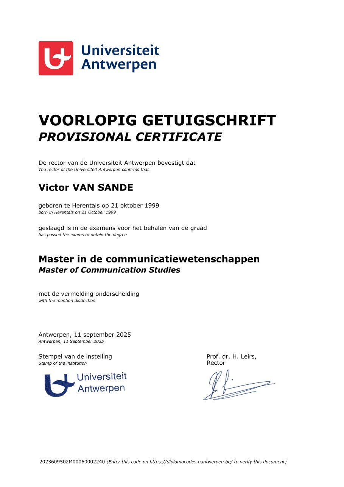
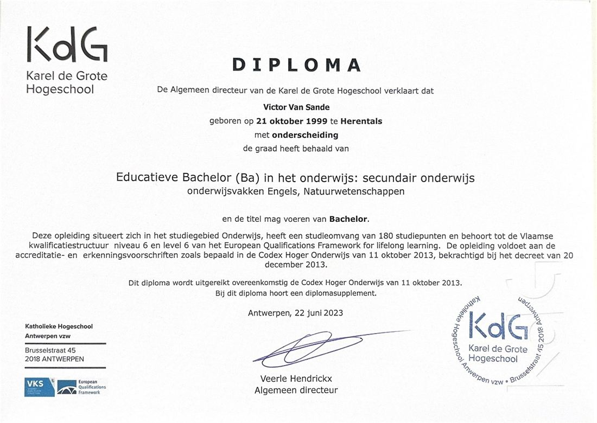
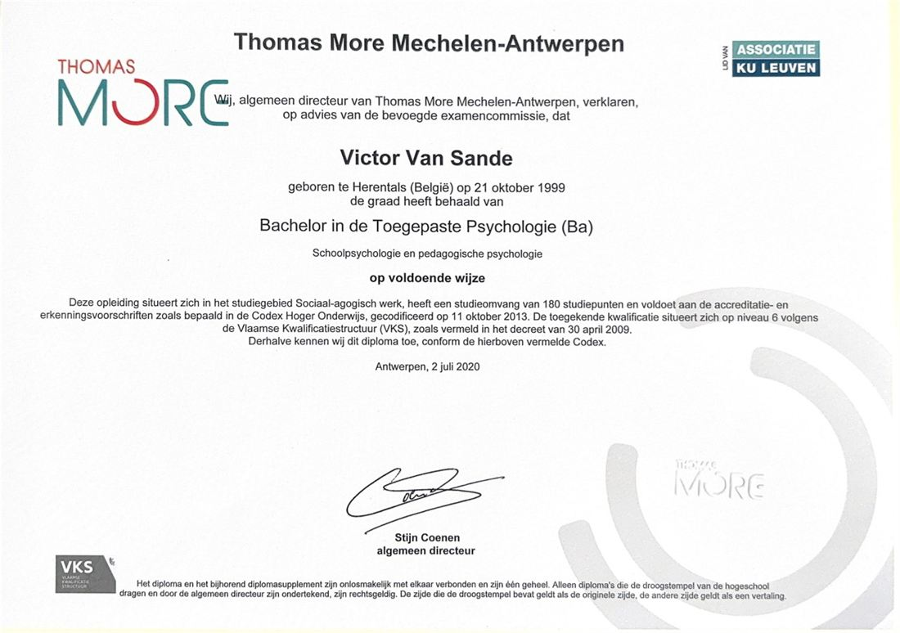
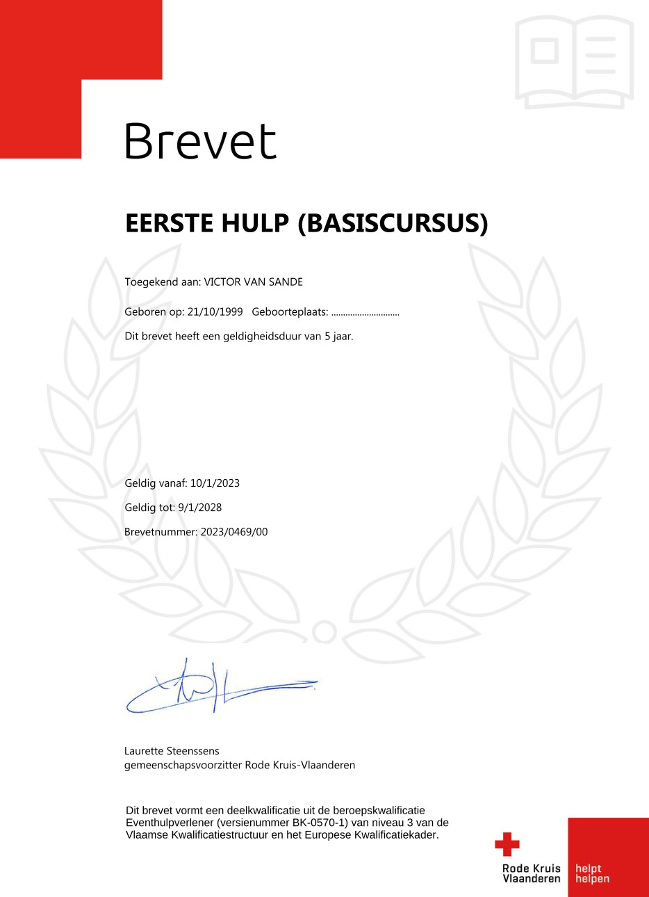
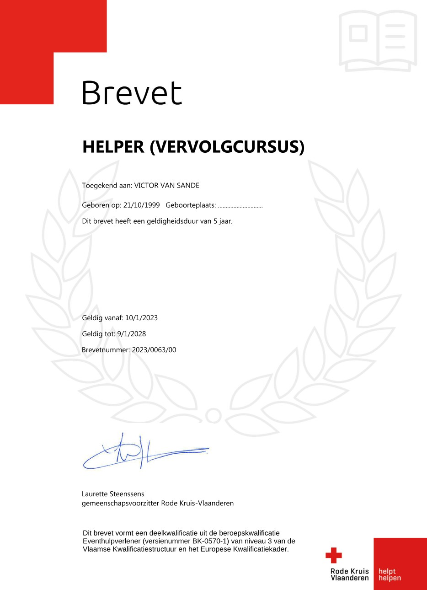

Hallo, ik ben
Victor Van Sande
Communicatiewetenschapper met een brede blik op communicatie. Ik combineer een analytische, wetenschappelijke kijk met de warmte en empathie die mensgericht werk verdient.
Eén profiel, veel raakvlakken
Communicatie, media en journalistiek, (web)design, psychologie, technologie en leiderschap: ik beweeg me vlot tussen deze domeinen en breng ze samen tot een coherent geheel.
Doelgerichte communicatie
Heldere, strategische communicatie is de rode draad doorheen mijn master, met oog voor data, gedrag en het discours in media en politiek.
Design & digitale content
Van webdesign en visuele identiteit tot fotografie en film: ik vertaal ideeën naar beeld en interfaces die blijven hangen.
Leiderschap & organisatie
Jarenlange ervaring in het aansturen van teams en het organiseren van events vertaal ik moeiteloos naar nieuwe projecten en contexten.
Wat mij onderscheidt
Mijn kracht zit in de combinatie: academische expertise in communicatie, een scherp oog voor (web)design, vlotte netwerking en een natuurlijk leiderschap. Samen zorgen die ervoor dat ik mensen, boodschappen en organisaties met elkaar verbind.
Expertise in communicatie
Academisch onderbouwd, strategisch en doelgericht.
(Web)design & visuele creatie
Van interface tot beeld dat blijft hangen.
Netwerking & verbinding
Mensen, partners en organisaties samenbrengen.
Leiderschap & jeugdwerk
Teams aansturen met natuurlijk overwicht.
Analytisch van geest,
mensgericht van nature
Dankzij drie diploma's die elk een ander deel van mijn passies aanscherpten, ontwikkelde ik me tot een enthousiaste, empathische en kritische geest op het snijvlak van psychologie, educatie en communicatie.
Ik werk graag mensgericht, ongeacht wat ik doe.
Ik bevind me op het snijvlak van communicatie, media, psychologie en technologie. Mijn academische bagage combineer ik met een scherp oog voor design en jarenlange ervaring in het aansturen van teams en projecten, wat me sterke communicatieve, organisatorische en leidinggevende vaardigheden geeft.
Ik kijk naar de wereld met een analytische, wetenschappelijke blik die tegelijkertijd de broodnodige warmte, empathie en begrip toepast die ieder van ons dagelijks verdient.
Vaardigheden
Meertalig communiceren
Wat me drijft
Fotografie & film
Verhalen vertellen door beeld, van compositie tot montage.
Tech-trends
Nieuwe technologieën en hun impact op mens en samenleving.
Hoofdleider KSA Herentals
Jeugdwerk met hart, sinds 2017 als hoofdverantwoordelijke.
Psychologie
Diep inzicht in de menselijke psyche, persoonlijk én professioneel.
Drie diploma's,
elk met onderscheiding
Psychologie, lerarenopleiding en communicatiewetenschappen: een opbouw die mijn passies stap voor stap aanscherpte.
Universiteit Antwerpen
sep 2023 – sep 2025Master in de communicatiewetenschappen
Deze master stilde mijn academische nieuwsgierigheid. Ik verdiepte me in journalistiek, media en de opkomende technologieën die deze velden vormgeven, en versterkte mijn geloof in een sterke, wetenschappelijke aanpak in een snel veranderende samenleving. Het verbreedde mijn kijk op media, politiek en het discours daartussen, terwijl ik mijn communicatieskills verder aanscherpte.
Afgestudeerd met onderscheiding
Karel de Grote Hogeschool
sep 2020 – jun 2023Educatieve Bachelor: Wetenschappen & Engels
Deze opleiding verdiepte mijn academische interesse, ditmaal in zowel Engels als de natuurwetenschappen. Ik leerde deze vakken met evenveel enthousiasme overbrengen aan jongeren als ik er zelf voor voel. Dat versterkte niet alleen mijn wetenschappelijke kennis, maar bevestigde ook mijn C2-niveau Engels en verbreedde mijn opties voor de toekomst.
Afgestudeerd met onderscheiding
Thomas More Hogeschool
sep 2017 – jun 2020Bachelor in de Toegepaste Psychologie
Mijn eerste diploma leerde me doorzettingsvermogen en zelfstandigheid, en wekte mijn interesse in de academische wereld. Ik leerde zowel groepen als individuen begeleiden en verwierf diepgaand inzicht in de menselijke psyche, telkens toegepast in een reële context. Met de officiële titel psychologisch consulent kan ik mensen in nood inschatten, erop reflecteren en feedback geven, trouw aan de nieuwste wetenschappelijke inzichten.
Titel: psychologisch consulent
Mijn onderzoek
De Macht van Misleiding
Een kwantitatieve analyse van epistemisch vertrouwen, mediavertrouwen en complotdenken bij Vlamingen. Hoe verschillende vormen van (wan)vertrouwen de vatbaarheid voor complottheorieën vormgeven in een post-truth samenleving.
Aanvullende kwalificaties
Brevetten van het Rode Kruis Vlaanderen (geldig tot 2028), samen een deelkwalificatie Eventhulpverlener.
Eerste Hulp (basiscursus)
Brevet 2023/0469/00 · geldig tot 9/1/2028.

Helper (vervolgcursus)
Brevet 2023/0063/00 · geldig tot 9/1/2028.

Een veelzijdig
parcours
Van communicatie en onderzoek tot (web)design, leiderschap en onderwijs: ervaring over verschillende vakgebieden heen, telkens met mensen in het middelpunt.
Op dit moment bij Gekkoo
Gekkoo Sinds mei 2025
Inhoudelijk medewerker, netwerker & communicatiemedewerker
Gekkoo organiseert speelpleinwerking en vakantiekampen die kinderen 'dé vakantie van hun leven' bezorgen, van de Speelpleinen Gekkoo tijdens de zomer- en herfstvakantie tot Kamp Gekkoo in de Ardennen. Als inhoudelijk medewerker, netwerker en communicatiemedewerker breng ik er mijn achtergrond in communicatie, psychologie en jeugdwerk samen: ik werk mee aan de inhoudelijke uitbouw, versterk het netwerk rond de organisatie en sta mee in voor de communicatie naar kinderen, ouders, vrijwilligers en partners.
Meegegroeid met KSA Herentals
KSA Herentals
Dé jeugdbeweging met de blauwe hemden en oranje sjaaltjes in het hart van Herentals. ksaherentals.be ↗
Website Designer
2022 – hedenNa de overstap naar een meer digitale aanpak richtte ik zelfstandig de website van onze jeugdbeweging op en houd ik die al jaren up-to-date.
Hoofdleider
sep 2019 – hedenVerantwoordelijk voor het leiden van de jeugdbeweging: een team van leiding coördineren, activiteiten en grootschalige events organiseren en de organisatie vertegenwoordigen in de lokale gemeenschap.
Leider
sep 2015 – hedenWekelijks activiteiten begeleiden voor kinderen en jongeren, met oog voor verhaal, verbeelding en groepsgevoel.
In de praktijk
Githo Nijlen
Leerkracht Engels (stage) · Teaching English as a Foreign Language
Sint-Lutgardisschool
Leerkracht natuurwetenschappen (stage) · Science Education
kOsh Campus Ieperstraat
Jeugdconsulent (stage) · Counseling & begeleiding
Mijn jobstudentjaren
POP Coffee
Barista (jobstudent) · Multitasking & klantenservice
Van Eccelpoel
Winkelmedewerker (jobstudent)
Laten we samenwerken
Heb je een vraag, een project of een mooie kans? Ik hoor graag van je.
Stuur me gerust een bericht
Een vraag, een project of gewoon kennismaken? Ik antwoord doorgaans snel. Eén klik en je mailvenster staat klaar.